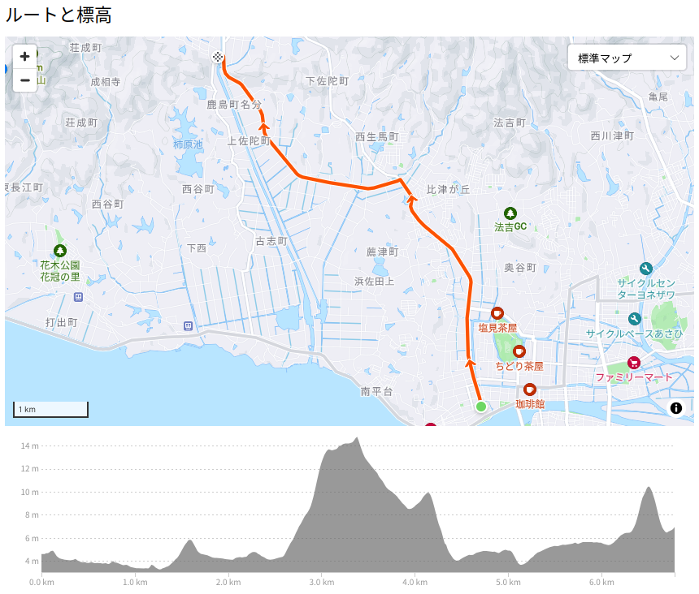

佐太神社に行こう（お散歩カメラ 2024-09-14）

9月最初の3連休。 天気はよさそうなのでお出掛けしてみる。
久しぶり八雲温泉
とりあえず，久しぶりに八雲温泉に行こうか。
めがっさ良い天気っす。
木次乳業さん，いつもお世話になっています。
昼飯をどうしよう。 こちらも久しぶりに安分亭で猪を食べるか。
お腹が落ち着いたところで今回の本命に行ってみようか。
佐太神社に行こう
宍道湖の北側は私の子供時代の遊び場（テリトリ）から外れているが，おかげさまで自転車で行ける範囲が徐々に広がってきた。 今年の秋が終わるまでを目処に松江市北側の日本海を目指すことを当面の目標にしている。
その前段階として今回は途中にある佐太神社を目指すことにした。

佐太神社へ行こうより
高低差も少なく，さくっと到着。
逆光ですまん。 写真を撮るなら午前中に行かんとダメやね。 今後の課題としよう。
この写真の参道の左側（南側）に「佐陀乃だんだん家」というお店がある。 お参りするときは閉まっていたのだが，帰ろうと通りかかったら開いてたので入ってみた。 ぜんざいが美味いらしい。
すましぜんざい美味っ！ 甘過ぎずちょうどいい感じ。 添えられてる塩こんぶも良き。
ふと見ると「護縁物語」というラベルが目に入る。
「護縁」？ いやいやいや（笑） まさかこのフレーズ（？）をこんなところで見かけるとか。 コラボしたりしないのかなー
持ち帰りで買えないのか訊いてみたのだが，だんだん家では（酒屋として）販売する許可がないため，店内で飲むのでなければ売ってもらえないらしい。 自転車で来てるからなぁ。 飲酒運転，ダメゼッタイ！
ちなみに，帰りがけに地ビール館に寄って件のラベルのビールがあるか探したのだが見当たらなかった。 どっか売ってるとこないかなぁ。 知ってる方いらっしゃいましたら教えてください 🙇
帰りますか
では帰るとしますか。 あちこち道草を食いながら移動する。
松江市の北側は大きな圃場が多いので，稲刈りの仕方も南側とは違うよなぁ。
ようやく嫁ヶ島付近まで戻る。
あと50分くらいすれば日没なんだけど，疲れちゃったので，そのまま帰宅。 このくらいの距離は楽々走れるようにならないとなぁ。
参考

- Canon コンパクトデジタルカメラ PowerShot ZOOM 写真と動画が撮れる望遠鏡 PSZOOM
- キヤノン (Release 2020-12-10)
- エレクトロニクス
- B08L4WKDZ7 (ASIN), 4549292179675 (EAN)
- 評価
望遠鏡型コンパクトデジカメ。メモリと充電器（要 Power Delivery）は別に用意する必要がある。使い勝手はまぁまぁ。

- GARMIN(ガーミン)Edge Explore 2 Power サイクルコンピューター【日本正規品】
- ガーミン(GARMIN) (Release 2022-09-22)
- スポーツ用品
- B0BD7FGVR6 (ASIN), 0753759310660 (EAN), 753759310660 (UPC)
- 評価
Garmin 製のルート探索・ナビゲーション特化のサイコン。タッチパネル助かる。充電ポートは USB-C (not PD)。また別売りの変換ケーブルを使いモバイルバッテリからパワーマウント経由で給電することもできる。ライドタイプが「ロード」「屋内」「グラベル」の3種類しかない。 Live Segment 非対応。

- [クローム] ボディバッグ KADET BXRF_BLACK XRF (現行モデル) カデット マックス ブラック エックス リフレクティブ 15L リフレクター 防水
- CHROME
- ウェア&シューズ
- B0BQQMVWBB (ASIN), 0841916176775 (EAN), 841916176775 (UPC)
- 評価
使い勝手についてはこの動画を参照のこと。たくさんの内ポケットで仕切られているのがいい。容量は15Lで，16インチノートPCが入る。取っ手も付いていて仕事でも使えそう。3点ストラップ。防水仕様。オモテ面は光を反射しやすい素材を使っていて，夜間でもクルマから視認しやすい（らしい）。

- シカ色デイズ
- 馬車芽めめ (CV.和泉風花) (メインアーティスト)
- Lantis 2024-07-08 (Release 2024-07-08)
- MP3 ダウンロード
- B0D6B7YGWV (ASIN)
- 評価
アニメ「しかのこのこのここしたんたん」OP曲。出だしのフレーズが耳に残ってしまって（笑） 別にシカは目指さない。

- 赤泥
- MindaRyn (メインアーティスト)
- Lantis 2036-01-01 (Release 2024-08-15)
- MP3 ダウンロード
- B0D97BSYQN (ASIN)
- 評価
TVアニメ「戦国妖狐 千魔混沌編」挿入歌。 mora で高解像度版が買える。 MindaRyn ってこんな唄も歌うんだな。

- フィーリングラデーション
- ReGLOSS (メインアーティスト)
- cover corp. 2024-09-11 (Release 2024-09-11)
- MP3 ダウンロード
- B0DGG9JKM4 (ASIN)
- 評価
mora で高解像度版が買える。MV見て衝動買い。移動中に聴くと楽しいノリのいい曲。玲瓏（リンロン）と響く “ReSTART LINE!!” の歌詞部分がお気に入り。